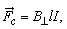
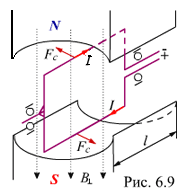

6.2.3. Закон Ампера
Закон Ампера устанавливает связь между механической силой, магнитной индукцией, током и длиной проводника: сила, действующая на проводник с током в магнитном поле, равна произведению магнитной индукции, тока и длины отрезка проводника, перпендикулярного магнитной индукции, т. е.
 |
(6.5) |
|---|
Направление механической силы определяют по известному правилу левой руки (рис. 6.9): если расположить левую руку так, чтобы м. с. л. входили в ладонь, а выпрямленные четыре пальца совпадали с направлением тока, то отогнутый большой палец укажет направление действия силы. Закон Ампера лежит в основе функционирования электрических двигателей, реле и других электромагнитных устройств.